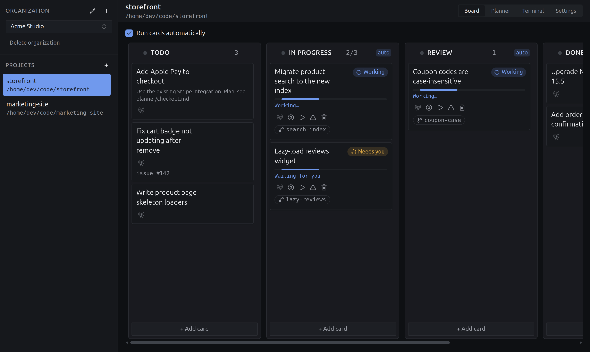
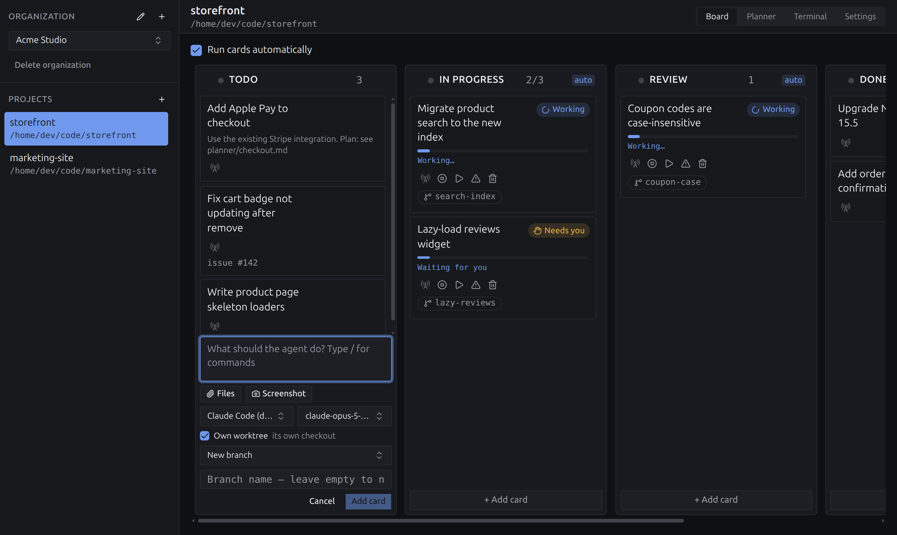
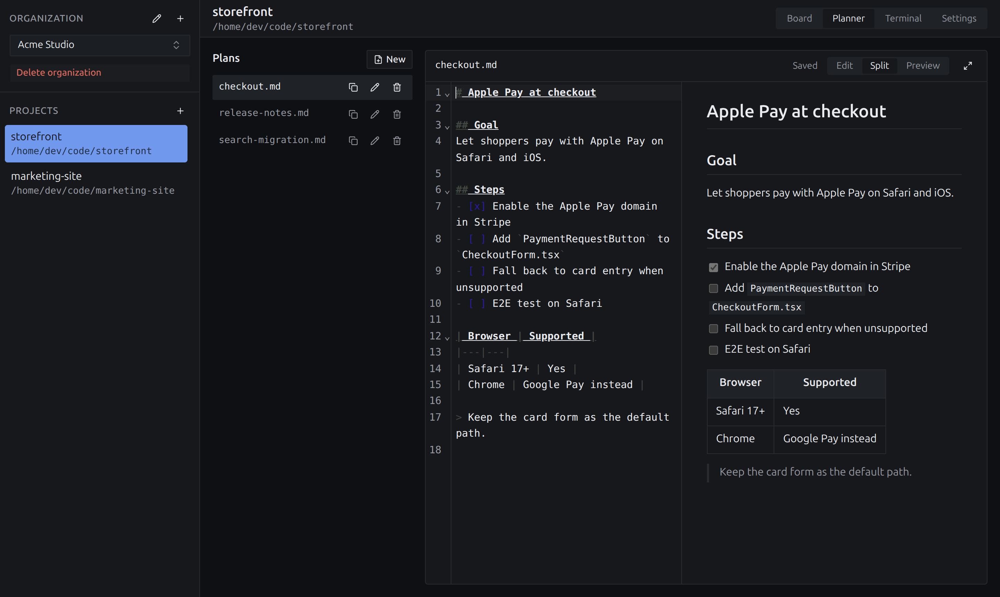
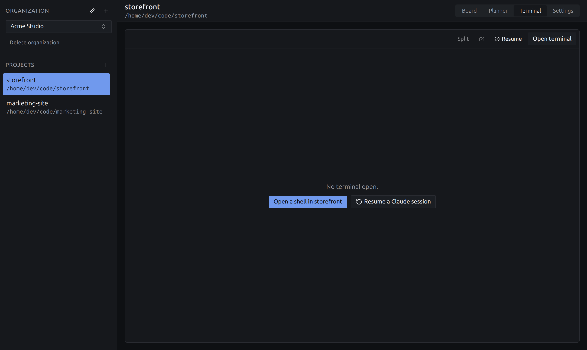
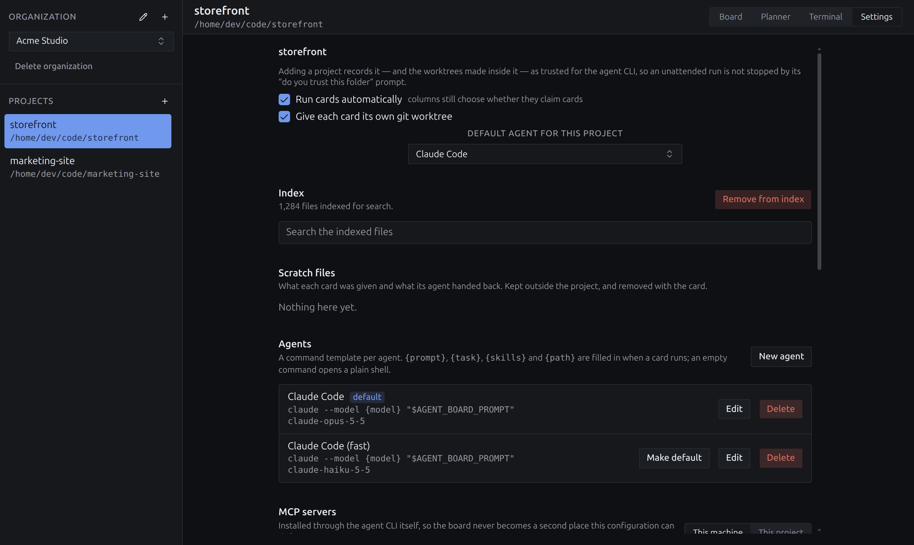
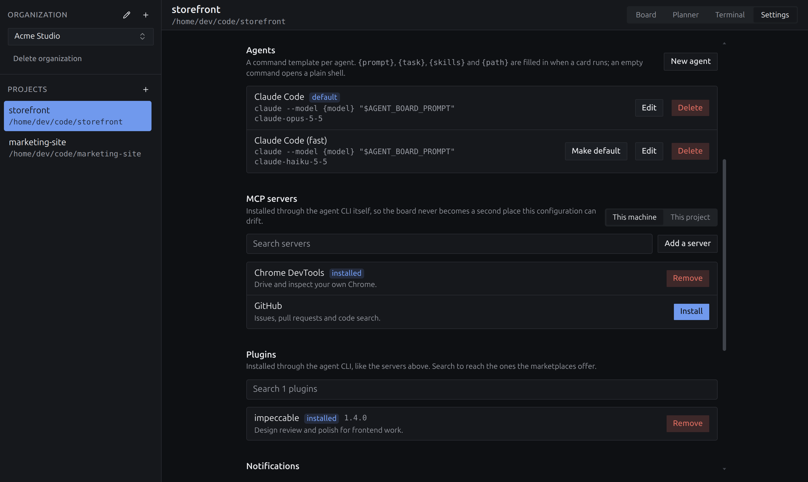
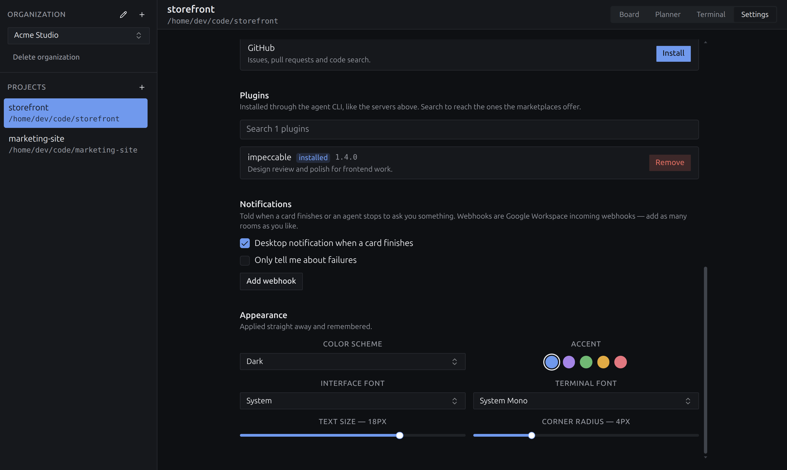

User guide - install, set up, run agents, every setting
Agent Board - User
Guide v0.3.0
The operational guide to Agent Board: a desktop Kanban board that runs coding agents. Each column says what an agent should do with the cards in it, so a card can claim itself, run in its own git worktree, and move to the next column when the agent is done. Section 2 gets a first card running; section 3 documents every feature; section 4 documents every setting with a sample value; section 6 is the changelog.
Last updated: November 19, 2026 App version: 0.3.0
Runs on: Windows · macOS · Linux Needs: claude CLI, git
What Agent Board is
A Tauri desktop app with a Next.js interface. Rust owns the terminal, git, the SQLite database, project indexing and notifications. Boards live in a local database, so they survive a restart, and nothing is sent anywhere except what your agents and webhooks send. A board belongs to a project (a directory on disk), and projects are grouped under an organization.
1. Install and launch
From a clean machine to the app open with an empty board.
1. Requirements
| Requirement | Version | Why |
|---|---|---|
claude CLI | current | The default agent every card runs. Any other CLI agent can be added in Settings → Agents. |
git | 2.30+ | Worktrees, branches and the per-card checkout. |
gh | optional | Turns a pasted GitHub issue or PR link into a card title, body and branch. |
tmux | optional (macOS, Linux) | Keeps a card's agent alive after the window closes and lets you rejoin it. Without it a card's terminal ends with the app. |
| Screenshot tool | optional (Linux) | One of spectacle, gnome-screenshot, maim or scrot for the card Screenshot button. Pasting an image always works. |
2. Install the app
Download the installer for your system from the repository's Releases page.
| System | File | Install |
|---|---|---|
| Windows (x64) | Agent.Board_x.y.z_x64-setup.exe or .msi | Run it. Installs per user. |
| macOS | _aarch64.dmg / _x64.dmg | Drag Agent Board to Applications. First launch: right-click → Open. |
| Debian / Ubuntu | agent-board_x.y.z_amd64.deb | sudo apt install ./agent-board_*.deb |
| Fedora / RHEL | agent-board-x.y.z-1.x86_64.rpm | sudo dnf install ./agent-board-*.rpm |
| Any Linux | .AppImage | chmod +x it and run it. |
The builds are not code-signed. On Windows, SmartScreen asks once: More info → Run anyway.
3. Verify the install
- Agent Board opens with an empty sidebar and the hint No project selected.
- In a terminal,
claude --versionandgit --versionboth answer. A launch from the Dock or app menu uses the same PATH as your login shell, so Homebrew, npm and version-manager installs are found. - Data is stored in the OS app-data directory, e.g.
~/.local/share/dev.agentboard.app/agent-board.dbon Linux.
2. Quick start
Your first card, run by an agent, in five steps.
- Sidebar → Organization → +: name it, e.g.
Acme Studio. - Projects → +: pick a directory, e.g.
/home/dev/code/storefront. A new project gets Todo, For Review, Agent Review and Completed columns. - Under Todo, click + Add card and type what the agent should do:
Fix cart badge not updating after remove. Click Add card. - Click the card, then Run. The Terminal view opens with the agent working in the card's own worktree.
- When the agent goes quiet the card is marked done and moves to the column set as its On success target.

3. Features
Every view and what each control does.
1. Board and columns
The Board tab shows the selected project's columns. Drag cards between columns and drag columns
to reorder them. The header of a column shows its card count, its WIP limit (2/3) and an
auto badge when it runs cards on its own. Run cards automatically above the board is
the project's master switch; a column still needs its own switch to claim cards.
| Board type | Meaning |
|---|---|
| Todo | Queue the runner claims cards from. |
| In Progress | Where a card sits while its agent runs. |
| Review | Finished, waiting on a human. |
| Done | Closed out. |
| Custom | Anything else: testing, design, blocked. |
2. Cards
+ Add card opens the composer. Type / to pick a slash command from your project,
user or plugin commands.

| Composer field | What it does | Sample |
|---|---|---|
| Prompt | What the agent should do. A pasted GitHub issue/PR link fills in title, body and branch (needs gh). | https://github.com/acme/storefront/issues/142 |
| Files / Screenshot | Attach files, paste an image or take a region screenshot. Stored outside the repo and handed to the agent. | pasted-2026-11-19.png |
| Agent / Model | Override the column's or project's agent and model for this card only. | Claude Code, claude-opus-5-5 |
| Own worktree | Give the card its own git checkout instead of the project directory. | on |
| Branch | New branch, or an existing one. Empty names it after the card. | fix-cart-badge |
Card states and actions
| Badge | Meaning |
|---|---|
| Working | The agent is running; the line under the title shows its live status. |
| Needs you | The agent is waiting for an approval or answer. A desktop notification is sent. |
| Done / Failed / Blocked | The run ended; the card has moved to the column its outcome routes to. |
While a run is live the card shows four actions: Interrupt (stop what it is doing), Continue (tell it to carry on), Block (hand it back to a person) and Drop (abandon this run). The antenna icon toggles Remote control for the card's session.
3. Automatic runs and routing
When both the project and a column have auto-run on, the runner claims cards that land in that column, moves them to the column's While running target and starts the column's command. The exit decides where the card goes next: On success or On failure. A column with plans on asks the agent for a plan first and stores it on the card without overwriting the card's own text.
Todo ──claim──▶ In progress ──success──▶ Review ──success──▶ Done
│ │
└──failure──▶ Todo └──failure──▶ In progress4. Planner NEW
The Planner tab, beside Board, holds Markdown notes for planning work. Notes are stored in the
app's tmp store (…/dev.agentboard.app/tmp/planner/), never inside a repository, so they never show up in
git status, and they are shared by every project.

- New creates
untitled.md(oruntitled-2.mdif taken) and opens it. - The copy icon puts the note's full path on the clipboard. Paste it into a card prompt:
Implement the plan in /home/dev/.local/share/dev.agentboard.app/tmp/planner/checkout.md. - The pencil renames in place (Enter saves, Esc cancels;
.mdis added for you). The bin deletes on a second click. - Edit / Split / Preview switch between the code editor (line numbers, Markdown highlighting), both side by side, or the rendered README view (tables, task lists, code blocks).
- The expand icon makes the editor full screen; Esc leaves it.
- Changes save automatically 0.6 s after you stop typing; the header shows Saving… / Saved.
5. Terminal
The Terminal tab shows every running session as a tab. Sessions stay alive behind the tab strip.

| Control | What it does |
|---|---|
| Open terminal | A shell in the project directory, replacing the focused pane. |
| Split | Another shell beside the current one; the layout icon stacks or places panes side by side. |
| Resume NEW | Runs claude --resume in a new tab and shows Claude's list of earlier sessions to pick from. Claude keeps history per directory, so it uses the focused terminal's directory (e.g. a card's worktree), or the project directory when nothing is open. |
| External link icon | Opens the focused session in your system terminal. With tmux it attaches to the very same session. |
| Finished / Blocked | Shown for a card's session: moves the card on as if the agent had finished, or sends it back. |
6. Worktrees and scratch files
With Give each card its own git worktree on, every card runs in its own checkout on its own branch, so parallel agents never edit the same files. The sidebar lists a project's worktrees; remove one there when its branch is merged. Files attached to a card, and files an agent mentions in its output (screenshots, reports, logs), are kept in the card's scratch store outside the repo and removed with the card.
4. Settings
Every setting, what it changes, and a sample value. Open with the Settings tab.

1. Project
| Setting | Default | What it does | Sample |
|---|---|---|---|
| Run cards automatically | on | Master switch for the runner in this project. | on |
| Give each card its own git worktree | on (git repos) | Per-card checkout and branch. Disabled for non-git directories. | on |
| Default agent for this project | global default | Agent used when neither card nor column picks one. | Claude Code |
Adding a project records it, and the worktrees made inside it, as trusted for the agent CLI, so an unattended run is not stopped by a "do you trust this folder" prompt.
2. Index and scratch files
Index builds a local search index of the project (shown as file count) and lets you search it,
e.g. PaymentRequestButton. Scratch files lists every card's attachments and agent
output across all projects, with Show in file manager and Remove all per card.
3. Column settings
Open with the column's Edit column menu.
| Field | What it does | Sample |
|---|---|---|
| Name / Board type | Label and role of the column (see 3.1). | Testing, Custom |
| Skills | Skills the agent should use for cards here; available as {skills}. | infra-llm-review, security-review |
| Agent / Model | Override the project's agent and model for this column. | claude-haiku-5-5 |
| Command | Overrides the agent's command for this column. | claude -p {prompt} |
| Prompt | What the agent should do with cards in this column, added to every card's prompt. | Review the diff and fix what you find. |
| WIP limit / Color | Max cards running at once; header colour. | 3 |
| Run cards that land here automatically | Lets the runner claim cards from this column. | on |
| While running / On success / On failure | Where the card goes during and after a run. "Stay put" leaves it. | In progress / Review / Todo |
4. Agents

An agent is a name, a command template, environment variables and a default model. One agent is the global default. Placeholders are filled in and shell-quoted per card; a flag whose placeholder is empty is dropped.
| Placeholder | Becomes |
|---|---|
{prompt} | The full prompt: card text, column prompt and what earlier runs did. |
{task} / {body} | The card's title / description. |
{skills} | The column's skills, comma-separated. |
{path} | The working directory (the card's worktree when it has one). |
{model} | The resolved model: card, then column, then agent. |
{tmp} | The card's scratch directory, so a sandboxed CLI may read attachments. |
Sample agent:
Name: Claude Code
Command: claude --permission-mode auto --model {model} --add-dir {tmp} {prompt}
Model: claude-opus-5-5The prompt is also exported as $AGENT_BOARD_PROMPT and the card title as $AGENT_BOARD_TASK.
5. MCP servers and plugins
MCP servers installs servers from a searchable catalog, or a custom one by name and command
(sample: my-server, npx -y some-mcp-server), at user or project scope. A browser MCP
config is added to each run so agents can drive Chrome. Plugins installs, enables and removes
Claude Code plugins; their slash commands then appear in the card composer.
6. Notifications
| Setting | What it does | Sample |
|---|---|---|
| Desktop notification when a card finishes | OS notification on finish and when a card needs you. | on |
| Only tell me about failures | Skip notifications for successful runs. | off |
| Webhooks | Post card events to a chat room. Each has a room name, URL and on/off switch. | Dev Team, https://chat.googleapis.com/v1/spaces/… |
7. Appearance

| Setting | Options | Sample |
|---|---|---|
| Color scheme | Light, Dark, System | Dark |
| Accent | Blue, Violet, Green, Amber, Rose | Blue |
| Interface font / Terminal font | System, Geist, Serif / System Mono, JetBrains Mono, Geist Mono | System / JetBrains Mono |
| Text size / Corner radius | Sliders, in px (default 18 / 4) | 16 px / 6 px |
5. Troubleshooting
| Symptom | Fix |
|---|---|
| A card never starts on its own | Turn on both the project's Run cards automatically and the column's Run cards that land here automatically; check the WIP limit. |
| The agent stops at "do you trust this folder" | Re-add the project so it is recorded as trusted, or run the agent once in that directory by hand. |
| The card terminal is gone after restarting | Install tmux; with it, opening the card rejoins the session that kept running. |
| Resume shows no sessions | Claude keeps history per directory. Focus a terminal in the directory you worked in (e.g. the card's worktree) before clicking Resume. |
| Screenshot button says no tool | Install gnome-screenshot or maim, or paste the image instead. |
| Planner path rejected by the agent | Sandboxed CLIs only read their working directory; add the planner folder with --add-dir in the agent command. |
6. Changelog
0.3.0
- Planner tab: Markdown notes in the tmp store with a copy-path button, code editor, README preview, split view, full screen and autosave.
- Terminal: Resume opens
claude --resumein the focused directory.
0.2.2
- Platform-specific command handling for every spawned tool.
0.2.1
- Indexed paths use
/separators on every OS.
0.2.0
- Browser MCP config added to agent commands.
- Slash-command autocomplete in the card composer, including plugin commands.
- Task handling, live output and UI improvements.